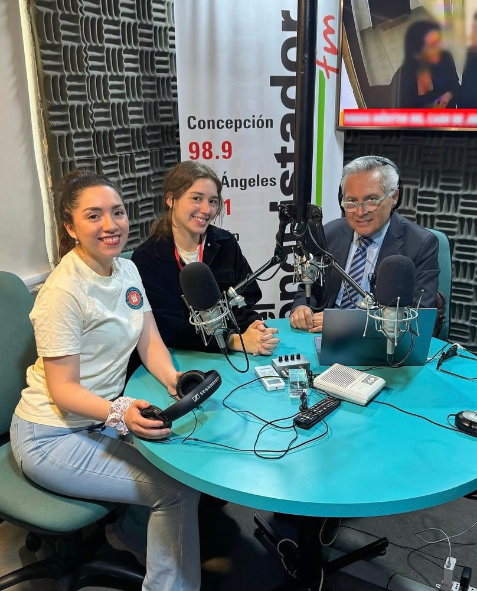
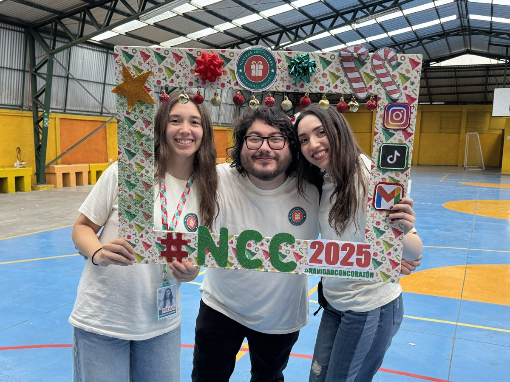
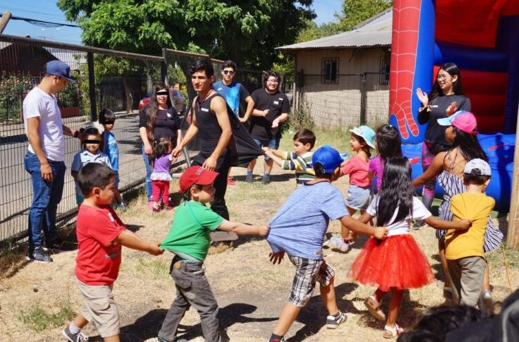

TVN
Navidad con Corazón es el voluntariado que entregó 100 regalos a niños.
Ver notaMedios de comunicación
Navidad con Corazón es el voluntariado que entregó 100 regalos a niños.
Ver nota
Prensa · 2025Navidad solidaria en Biobío: llaman a colaborar en diversas acciones benéficas previo a festividad.
Ver nota
Prensa · 2024Los jóvenes de Navidad con Corazón, por quinto año consecutivo, nuevamente harán felices a 100 niños en Concepción.
Ver nota
Radio · 2025